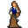

Miri¶Where to find Miri: Crossroads Guardhouse: houseatcrossroads0, Mt. Galmore: galmore_45, galmore_41
{ .sprite }
| Type | NPC (can be spoken to; cannot be attacked) |
| Role | Starts Darkness in the Daylight |
| Found in | Mt. Galmore, Crossroads Guardhouse |
| Entry ID | dds_miri |
| Introduced | v0.8.14 |
Locations¶
| Map | Region | Up to | Notes |
|---|---|---|---|
| galmore_41 | – | 1 | Appears later, during a quest |
| galmore_45 | Mt. Galmore | 1 | Appears later, during a quest |
| houseatcrossroads0 | Crossroads Guardhouse | 1 | Appears later, during a quest |
Quests¶
- Darkness in the Daylight: stages 10, 20, 30, 40, 50, 80, 90, 120, 150, 160, 190, 210, 220, 240, 260, 270, 280
- Darkness in the Daylight and Shadows - Non displayed (hidden flag): stages 3, 6
Dialogue simulator¶
Set the quest stages, items and other conditions that apply to your game, then start the conversation with Miri. The simulator applies the game's own rules: it performs the same silent checks, offers only the options that would be shown in the game, and applies their effects (quest stages, items handed over, rewards) as the conversation proceeds.
Rules verified against v0.8.18 game code (ConversationController.java) and dialogue data.
Dialogue (75 lines)
What the dialogue says, exactly as in the game files. Lines are listed once; links jump to the line a choice leads to.
dds_miri (silent check: the first matching branch below is taken)
- branch 1 (if reached stage 280 of Darkness in the Daylight) → dds_miri_600
- branch 2 (if reached stage 260 of Darkness in the Daylight; killed 1× Dark priest) → dds_miri_550
- branch 3 (if reached stage 260 of Darkness in the Daylight) → dds_dark_priest2_10
- branch 4 (if reached stage 250 of Darkness in the Daylight) → dds_miri_540
- branch 5 (if reached stage 220 of Darkness in the Daylight) → dds_miri_500
- branch 6 (if reached stage 210 of Darkness in the Daylight) → dds_mourning_woman_50
- branch 7 (if reached stage 190 of Darkness in the Daylight) → dds_miri_460
- branch 8 (if reached stage 160 of Darkness in the Daylight) → dds_miri_450
- branch 9 (if reached stage 150 of Darkness in the Daylight) → dds_miri_400
- branch 10 (if reached stage 120 of Darkness in the Daylight) → dds_miri_350
- branch 11 (if reached stage 100 of Darkness in the Daylight) → dds_miri_300
- branch 12 (if reached stage 90 of Darkness in the Daylight) → dds_miri_222
- branch 13 (if reached stage 60 of Darkness in the Daylight) → dds_miri_200
- branch 14 (if reached stage 50 of Darkness in the Daylight) → dds_miri_110
- branch 15 (if reached stage 40 of Darkness in the Daylight) → dds_miri_42
- branch 16 → dds_miri_5
dds_miri_600 Miri: “Isn't it a lovely day? Even in here?”
dds_miri_550 Miri: “Finally. Well done, kid.” — effects: sets stage 270 of Darkness in the Daylight
- “Is it over?” → dds_miri_560
dds_dark_priest2_10 Miri: “You're no priest!”
- “Miri! How did you get here?” → dds_dark_priest2_20
dds_miri_540 Miri: “The monster is not dead. Go and finish it!”
dds_miri_500 Miri: “It's not done yet. Can you talk to this priest? And tackle him as he deserves?” — effects: sets stage 240 of Darkness in the Daylight, spawns monsters on galmore_41
- “Of course! On my way!” → conversation ends
dds_mourning_woman_50 Miri: “Is that what you think?”
- “Miri? When did you get here?” → dds_mourning_woman_60
dds_miri_460 Miri: “Great. And now off to the barrier! Make haste - I'll join you as fast as my injuries allow.” — effects: sets stage 190 of Darkness in the Daylight, removes monsters from houseatcrossroads0
- “OK, see you there.” → dds_miri_462
dds_miri_450 Miri: “Have you found the complete chant?”
- “I haven't even found the old hermit yet.” (if NOT reached stage 170 of Darkness in the Daylight) → dds_miri_452
- “I found the old hermit, but he hasn't given me his book.” (if reached stage 170 of Darkness in the Daylight; NOT reached stage 180 of Darkness in the Daylight) → dds_miri_454
- “Yes, here it is.” (if reached stage 180 of Darkness in the Daylight) → dds_miri_456
dds_miri_400 Miri: “Hi $playername, I'm back.”
- “Did you find anything?” → dds_miri_410
dds_miri_350 Miri: “Any news about the Calomyran Secrets?”
- “Not really.” (if NOT reached stage 140 of Darkness in the Daylight) → conversation ends
- “I got more of the chant but I need to find another book, Azimyran Secrets, for the rest of the chant.” (if reached stage 140 of Darkness in the Daylight) → dds_miri_360
dds_miri_300 Miri: “What did you find out from Throdna?”
- “We talked about the rest of the spell to break the barrier for Kazaul.” (if NOT reached stage 110 of Darkness in the Daylight) → dds_miri_302
- “Apart from two parts of the spell which I know, the rest of the spell to break the barrier for Kazaul is in the book…” (if reached stage 110 of Darkness in the Daylight) → dds_miri_310
dds_miri_222 Miri: “Go meet Throdna. Since he's known to ramble, just say 'Kazaul est' to focus him again.” — effects: sets stage 90 of Darkness in the Daylight
- “'Kazaul est.'” → dds_miri_224
dds_miri_200 Miri: “Ah, you're back. Too soon - did you run into any issue?”
- “There's some sort of force shield blocking the path.” → dds_miri_202
dds_miri_110 Miri: “Journey to the south of Stoutford, into the weird lands there. Investigate what's going on in the Purple Hills.” — effects: sets stage 50 of Darkness in the Daylight, sets stage 3 of Darkness in the Daylight and Shadows - Non displayed (hidden flag), spawns monsters on galmore_45, spawns monsters on galmore_45
- “OK, I'm off. Stoutford ... I haven't been there in a long time ...” → conversation ends
- “The Purple Hills?” → dds_miri_112
dds_miri_42 Miri: “You've aided Feygard once before. Now, investigate something for me. If you succeed, I'll tell you what I know of Andor.” — effects: sets stage 40 of Darkness in the Daylight
- “So, what do you want from me?” → dds_miri_50
dds_miri_5 Miri: “Ah, one of the kids who've been causing trouble around Dhayavar.” — effects: sets stage 10 of Darkness in the Daylight
- “Oh, you know of me?” → dds_miri_10
dds_miri_560 Miri: “This is over, yes.”
- Next → dds_miri_562
dds_dark_priest2_20 Miri: “I could not let you go alone.”
- “You made me fight alone all the way here.” → dds_dark_priest2_30
dds_mourning_woman_60 Miri: “I came with all haste. Too bad the poison is slowing me down.”
- Next → dds_mourning_woman_62
dds_miri_462 Miri: “[Smiling] What an eager kid.”
dds_miri_452 Miri: “You'll have to put in a little more effort. All of Dhayavar trusts you.”
dds_miri_454 Miri: “He must. Go again.”
dds_miri_456 Miri: “Great.”
- Next → dds_miri_460
dds_miri_410 Miri: “About the Azimyran Secrets? Yes, my sources were most informative”
- “Tell me.” → dds_miri_420
dds_miri_360 Miri: “Where can that book be found?”
- “I don't know.” → dds_miri_370
dds_miri_302 Miri: “[Rolling eyes] That's not much. Go, talk to Throdna again.”
dds_miri_310 Miri: “Where can this book be found?”
- “I know! I helped find this book for that old man in Fallhaven. He must still have it. Let me talk to him.” (if NOT reached stage 140 of Darkness in the Daylight) → dds_miri_320
- “I have already visited the owner in Fallhaven.” (if reached stage 140 of Darkness in the Daylight) → dds_miri_350
dds_miri_224 Miri: “Exactly. Hurry now.”
dds_miri_202 Miri: “And? There must be more to it.”
- “I haven't seen anything suspicious.” (if NOT reached stage 70 of Darkness in the Daylight) → dds_miri_204
- “And I found this piece of Kazaul ritual again.” (if reached stage 70 of Darkness in the Daylight) → dds_miri_210
dds_miri_112 Miri: “Head south through Stoutford. The Purple Hills lie between the lake region and the mountains further south.”
- Next → dds_miri_114
dds_miri_50 Miri: “While investigating the forests east of Sullengard, slitherers got to me. Nasty little slitherers. Damned beasts.”
- Next → dds_miri_52
dds_miri_10 Miri: “Yes, I know of you. And a little about what your brother has been up to.”
- “Tell me please.” → dds_miri_12
dds_miri_562 Miri: “And now for your reward.”
- “Yes? Hope it is worth it.” → dds_miri_570
dds_dark_priest2_30 Miri: “Don't worry - it's worth it.”
- “But it's unfair to ...” → dds_dark_priest2_40
dds_mourning_woman_62 Miri: “[To the mourning woman] The ritual was not to bring back your husband - it is to bring Kazaul's powerful monsters into Dhayavar.”
- Next → dds_mourning_woman_70
dds_miri_420 Miri: “There's an Old Hermit who lives in the mountains south of Remgard.”
- Next → dds_miri_422
dds_miri_370 Miri: “No worries. I'm healed enough now.”
- Next → dds_miri_372
dds_miri_320 Miri: “Good thinking! Do that, seek the old man with the book.” — effects: sets stage 120 of Darkness in the Daylight
dds_miri_204 Miri: “Search thoroughly around this force shield to find anything unusual.”
- “I should have known.” → conversation ends
dds_miri_210 Miri: “What do you mean - again?”
- “When I was at the Blackwater settlement, I had used this, on the guidance of Throdna, as part of purifying the Kazaul…” → dds_miri_220
dds_miri_114 Miri: “You could also go west from Sullengard, but the route is longer.”
- “And how do I know that I am there?” → dds_miri_116
dds_miri_52 Miri: “I need to recover from the nausea and poison.”
- “Can I help you with some potions?” → dds_miri_60
dds_miri_12 (silent check: the first matching branch below is taken)
- branch 1 (if reached stage 82 of Feygard errands) → dds_miri_20
- branch 2 (if reached stage 120 of Beer Bootlegging) → dds_miri_30
- branch 3 → dds_miri_40
dds_miri_570 Miri: “You are still looking for your brother?”
- “Of course.” → dds_miri_580
dds_dark_priest2_40 Dark priest: “Are we going to do this now, or are you two going to talk all day?” — effects: removes monsters from galmore_41, spawns monsters on galmore_41, sets stage 260 of Darkness in the Daylight
- “Ah, sorry: KAZAUL EST!” → dds_dark_priest2_50
dds_mourning_woman_70 Mourning woman: “You lie! You don't want my happiness.”
- Next → dds_mourning_woman_72
dds_miri_422 Miri: “You know, at the old watch tower. The Hermit is said to have a copy of Azimyran Secrets. Go ...” — effects: sets stage 160 of Darkness in the Daylight
- “Go and get it?” → dds_miri_428
dds_miri_372 Miri: “You have run around enough. Let me ask around. Why don't you rest? Stroll around outside a bit to refresh!” — effects: sets stage 150 of Darkness in the Daylight, removes monsters from houseatcrossroads0, starts timer “dds_miri”
- “OK.” → conversation ends
dds_miri_220 Miri: “That is bad news indeed. We must act.” — effects: sets stage 80 of Darkness in the Daylight
- Next → dds_miri_222
dds_miri_116 Miri: “That's easy. The Purple Hills aren't just called that; they really have that color.”
dds_miri_60 Miri: “No, thanks. I've already taken some potions, and I'm waiting for them to take effect.”
- Next → dds_miri_70
dds_miri_20 Miri: “Information is for the trustworthy.”
- Next → dds_miri_22
dds_miri_30 Miri: “Information is for the trustworthy.”
- Next → dds_miri_32
dds_miri_40 Miri: “Information is for a price.”
- Next → dds_miri_42
dds_miri_580 Miri: “I know where he is. Or better, where he will be soon.”
- “Really? Tell me!” → dds_miri_590
dds_dark_priest2_50 Miri: “That's its true form! A monster masquerading as a priest! Attack!”
dds_mourning_woman_72 Miri: “Do you think monsters would have assisted you? And a barrier would have sprung up? Just for one person?”
- Next → dds_mourning_woman_80
dds_miri_428 Miri: “Yes! Go and get it.”
dds_miri_70 Miri: “But there's something bad happening in the lands south of Stoutford, and if we don't stop it, not only Feygard, but the whole of Dhayavar will be in trouble.”
- “So what's new?” → dds_miri_80
dds_miri_22 Miri: “By switching Gandoren's shipment with degraded ones, you have proved not to be. Suffice to say, when I was last there I heard your brother has been up to shenanigans in Feygard.” — effects: sets stage 20 of Darkness in the Daylight
- “How would you know that I did such things?” → dds_miri_25
dds_miri_32 Miri: “By hiding the truth of the beer bootlegging from Sullengard, you have proved not to be. Suffice to say, when I was last there I heard your brother has been up to shenanigans in Feygard.” — effects: sets stage 30 of Darkness in the Daylight, removes monsters from loneford4
- “How would you know that I did such things?” → dds_miri_25
dds_miri_590 Miri: “Andor is going to visit Rosmara to refill his travel supplies.” — effects: sets stage 280 of Darkness in the Daylight, removes monsters from galmore_41, spawns monsters on houseatcrossroads0, sets stage 6 of Darkness in the Daylight and Shadows - Non displayed (hidden flag), spawns monsters on wayto_feygard_duleian_2
- “Thank you!” → conversation ends
- “Who is Rosmara?” → dds_miri_592
dds_mourning_woman_80 Mourning woman: “I don't believe you.”
- Next → dds_mourning_woman_82
dds_miri_80 Miri: “Yeah - many weird things going on. But no time to waste.”
- Next → dds_miri_90
dds_miri_25 Miri: “As an investigator, it's my job to know. Now, buzz off, kid. Redeem yourself, if you can.”
dds_miri_592 Miri: “She's the fruit lady on the road near Feygard.”
dds_mourning_woman_82 Miri: “Then why did the ritual not include something that links to your husband? Something precious to him?” — effects: sets stage 210 of Darkness in the Daylight
- Next → dds_mourning_woman_90
dds_miri_90 Miri: “In the lands south of Stoutford, there have been reports of some suspicious activities. It is said to happen in the Purple Hills there.”
- Next → dds_miri_92
dds_mourning_woman_90 Mourning woman: “Oh no! What do I do now? He's gone.”
- Next → dds_mourning_woman_92
dds_miri_92 Miri: “I fear if left unchecked, we might see lots of really unstoppable monsters popping up all over Dhayavar.”
- “I'll kill them all!” → dds_miri_100
dds_mourning_woman_92 Miri: “Pray where have you been praying. And tell me who put you up to this?”
- “Yes, who put you up to this?” → dds_mourning_woman_100
dds_miri_100 Miri: “Admirable - but only few in Dhayavar have the skills to go toe-to-toe against these monsters. No, we must stop them at the source.”
- “So, what do we do?” → dds_miri_110
dds_mourning_woman_100 Mourning woman: “Why? That famous miracle priest who walks on lava, west of here. Do you need me anymore? Then I'm going home to mourn again.” — effects: sets stage 220 of Darkness in the Daylight, removes monsters from galmore_45, spawns monsters on loneford4
- Next → dds_mourning_woman_110
dds_mourning_woman_110 Miri: “Yes, you go back to your village. And we will have a chat with this famous miracle priest.”
- “Nice job.” → dds_miri_500
Version history¶
| Version | Change |
|---|---|
| v0.8.14 | Added Dialogue: 75 lines added |
| v0.8.15 | Dialogue: 1 line changed |
| v0.8.18 | Dialogue: 1 line changed |
Verified against v0.8.18 and every earlier release back to v0.7.0 (game data compared release by release).
Technical information
| Entry ID | dds_miri |
| Spawn group | dds_miri |
| Loot table | – |
| Conversation | dds_miri |
| Faction | – |
| Movement | – |
| Icon | monsters_ld1:228 |
| Defined in | res/raw/monsterlist_darknessanddaylight.json |
Raw data:
{
"id": "dds_miri",
"name": "Miri",
"iconID": "monsters_ld1:228",
"monsterClass": "humanoid",
"spawnGroup": "dds_miri",
"phraseID": "dds_miri"
}
Community notes¶
Written by players, not generated from game data. Observations: what players notice in-game · Lore: the in-world story · Trivia: real-world facts, references, development history · Theory / speculation: unconfirmed ideas; may just be unfinished content
Observations¶
No notes yet. Contributions are welcome: add a note.
Lore¶
No notes yet. Contributions are welcome: add a note.
Trivia¶
No notes yet. Contributions are welcome: add a note.
Theory / speculation¶
No notes yet. Contributions are welcome: add a note.
Data from v0.8.18